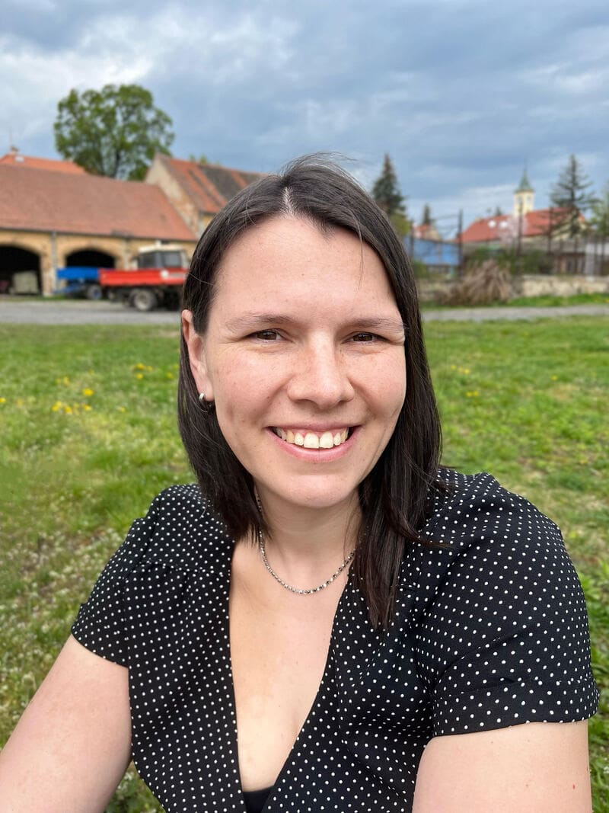

Jmenuji se Lucie Loučková
Matematika mě baví od dětství. Ráda ji předávám dál, hlavně dětem, které si na ni zatím netroufají.

Konstrukce a dopravní stavby & Učitelství
Jak se mi matematika dostala do života
Od oblíbeného předmětu k učitelství.
Můj nejoblíbenější předmět
Matematika mě vždycky bavila a byla mým nejoblíbenějším předmětem. Proto jsem už na gymnáziu a poté i na vysoké škole doučovala matematiku i fyziku.
Členka a vedoucí dětského oddílu
Další zkušenosti s prací s dětmi jsem získala v dětském oddíle, jehož jsem byla členkou a později i vedoucí.
Stavební inženýrství & Učitelství odborných předmětů
Studovala jsem na Fakultě stavební ČVUT obor Konstrukce a dopravní stavby a získala titul Ing. Pak jsem vystudovala učitelství odborných předmětů na Masarykově ústavu vyšších studií ČVUT a získala titul Bc.
Radost z pochopení
Doučuji dlouhodobě. Nadchne mě, když se může někdo s matematikou posunout dál a já k tomu můžu přispět.
Jak učím
Trpělivě, srozumitelně a bez biflování.
Jednoduše a trpělivě
Snažím se vše vysvětlovat jednoduše. Přizpůsobuji se tempu žáka a vytvářím bezpečné prostředí bez stresu.
Hledání správného způsobu
Zkouším více způsobů, jak látku vysvětlit. Každému vyhovuje jiný styl výuky. Pokud to jde, používám názorné pomůcky.
Klidné prostředí
Nespěchám a nepředpokládám, že žák všechno ví. Krok po kroku stavíme pevné základy, o které se lze opřít.
Přijímačky v klidu
U přijímaček pracuji s testy Cermat a trénujeme postupy, díky kterým se žák u zkoušek může soustředit přímo na řešení příkladů.
Vzdělání
Technické i pedagogické vzdělání na ČVUT.
Titul Ing.
České vysoké učení technické v Praze
Fakulta stavební · Konstrukce a dopravní stavby
Titul Bc.
Masarykův ústav vyšších studií ČVUT
Učitelství odborných předmětů